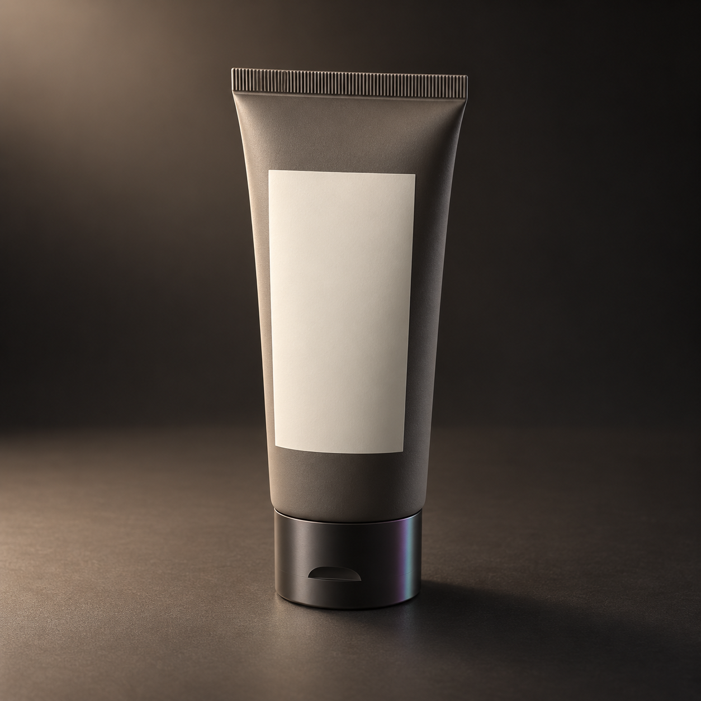
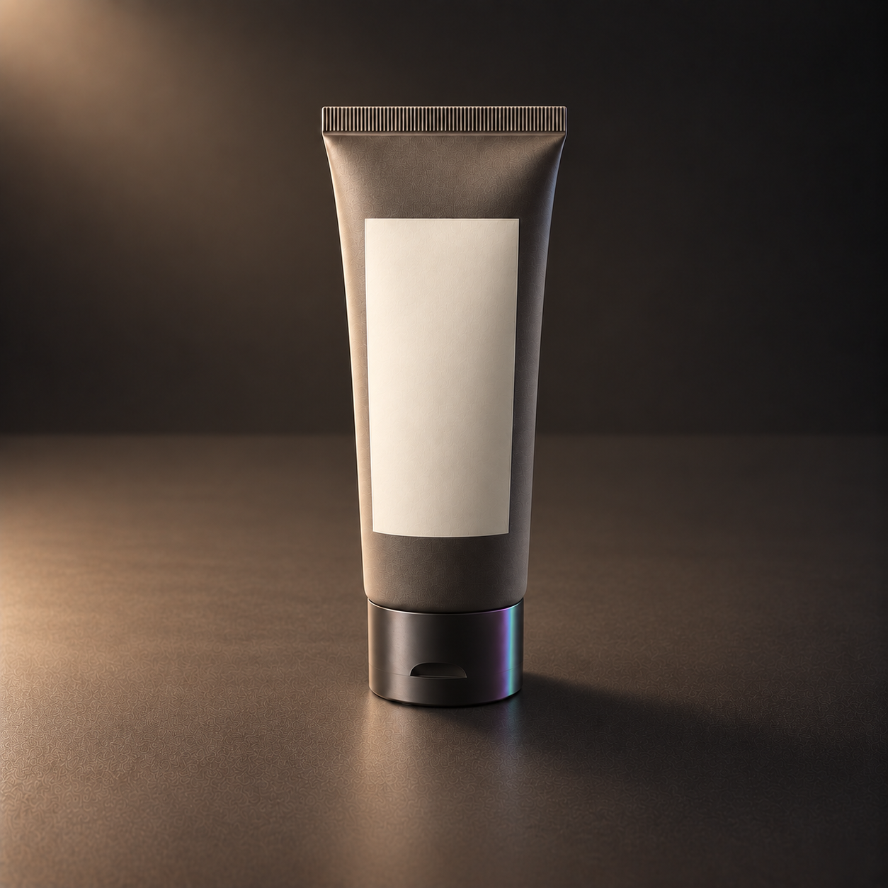
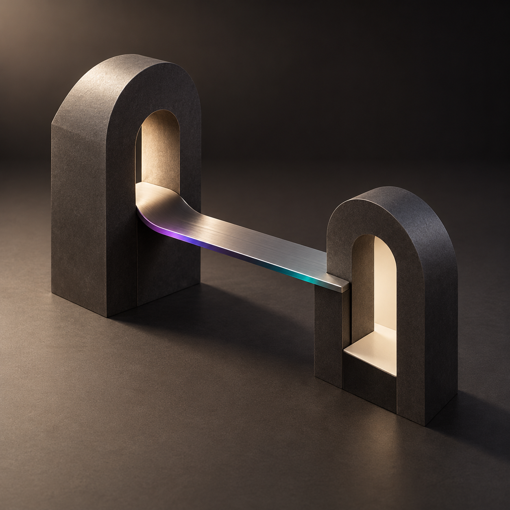
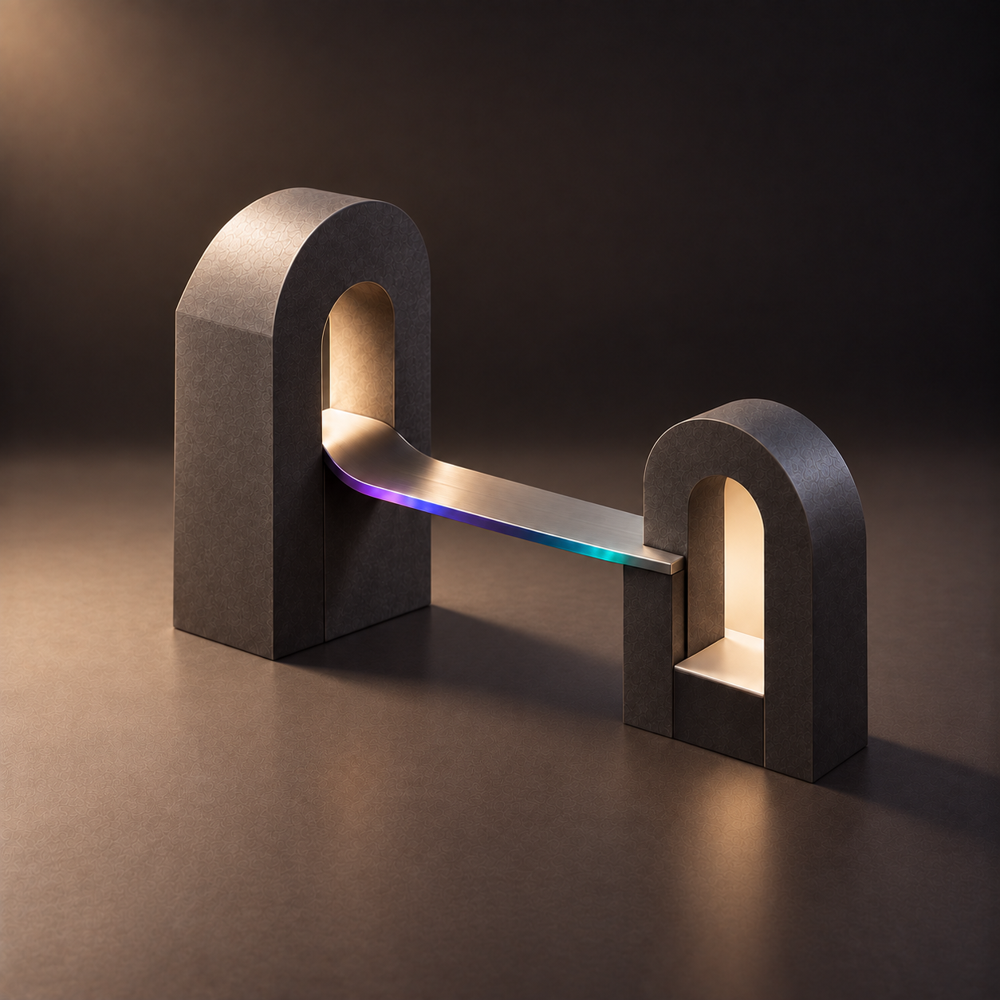
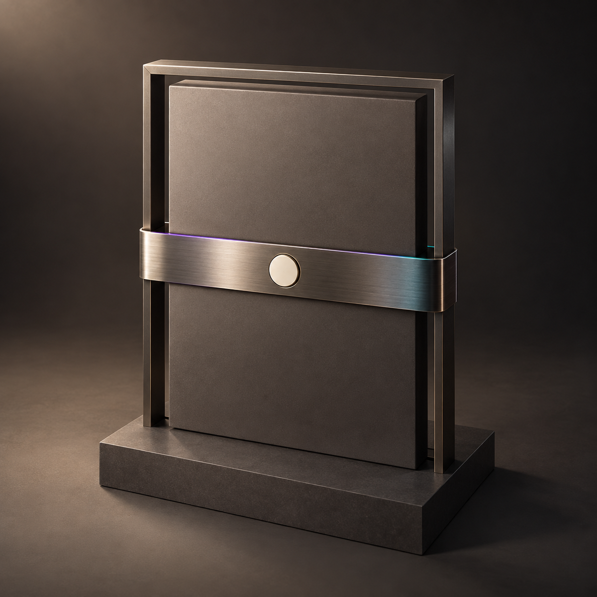
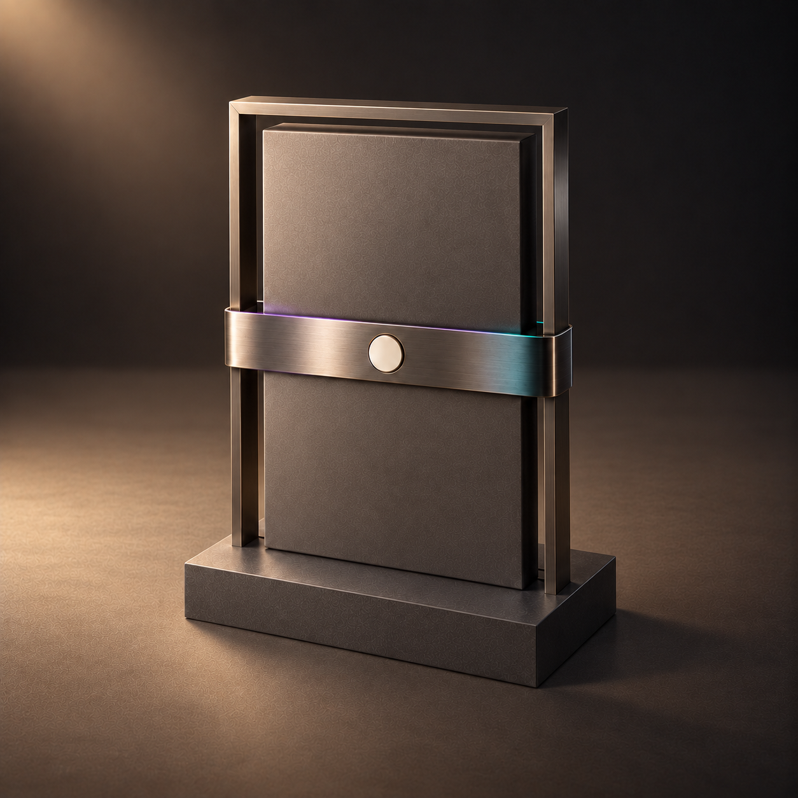

PRIVATE / NOT PUBLISHED / NO COMMERCE AUTHORITY
Calibration corrections 03 / 04 / 05
1 measured candidate(s); 2 studies still need correction. 9 raw attempts retained. No Batch 1 product renders, no preview update, no Core wiring. Framing success is not independent acceptance.
Authorization cd66f3c411e6164981295d81c2116e50343edc86; prepared source eee7abe7c68f2aa382f8a49118f5239b671cdc2c.
calibration-03-topical
rejected_by_framing_gate. Final attempt 3; independent approval pending.

Illustrative calibration study; not an exact product or approved asset.

Illustrative calibration study; not an exact product or approved asset.
Height 70.57%; top margin 11.80%; horizon 54.47%.
SHA-256 b30331adf582823a8e66f289cdc7014e87679a74d477b6724aa6ceb7bcde5a7c
TOP_MARGIN_BELOW_MIN
All retained attempts
- study-03-attempt-01: rejected_by_framing_gate
- study-03-attempt-02: rejected_by_framing_gate
- study-03-attempt-03: rejected_by_framing_gate


calibration-04-care-state
framing_pass_pending_independent_review. Final attempt 3; independent approval pending.

Illustrative calibration study; not an exact product or approved asset.

Illustrative calibration study; not an exact product or approved asset.
Height 66.91%; top margin 16.83%; horizon 53.59%.
SHA-256 543ff8e6dbcaad9497e7f512c320207b003855eb8de4bc91b844f4563fe4a8fc
Numeric framing gate passed; this is not asset approval.
All retained attempts
- study-04-attempt-01: rejected_by_framing_gate
- study-04-attempt-02: rejected_by_framing_gate
- study-04-attempt-03: framing_pass_pending_independent_review


calibration-05-restrictive-state
rejected_by_framing_gate. Final attempt 3; independent approval pending.

Illustrative calibration study; not an exact product or approved asset.

Illustrative calibration study; not an exact product or approved asset.
Height 76.32%; top margin 9.89%; horizon 56.94%.
SHA-256 46cc336909f38be87c0ce47508cf82991c99098809f718a27c7684791d8636cd
SUBJECT_HEIGHT_ABOVE_MAX, TOP_MARGIN_BELOW_MIN
All retained attempts
- study-05-attempt-01: rejected_by_framing_gate
- study-05-attempt-02: rejected_by_framing_gate
- study-05-attempt-03: rejected_by_framing_gate